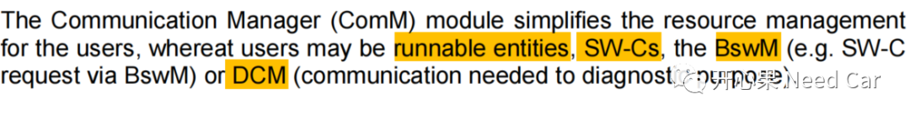
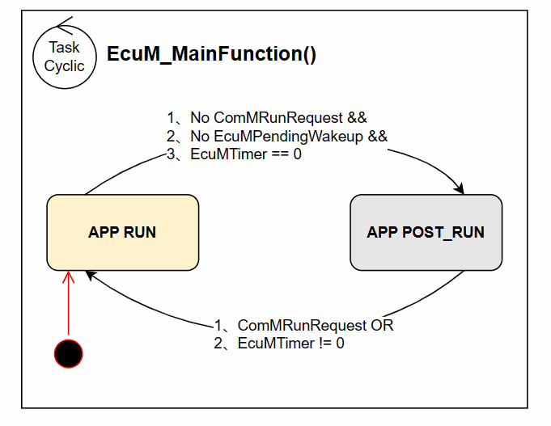

开心果 Need Car · 2023-02-10T11:52:00+08:00 · 微信原文
前面聊过ECU的启动、关闭流程，可以参考前文Autosar EcuM：ECU的启动、关闭流程。本文再聊一下EcuM的RUN Phase，主要是想聊一下RUN Phase中的APP RUN和APP POST_RUN仲裁。
在UP Phase阶段，EcuM_MainFunction()周期性执行，它主要有三个功能：
检查（Check）是否有唤醒源唤醒，以及初始化唤醒验证（Validation）；
更新Alarm Clock timer；
仲裁RUN和POST_RUN的请求情况
本文侧重讨论RUN和POST_RUN请求、释放的仲裁问题，因为POST_RUN是ECU进入Shutdown的前提。
（一）RUN、POST_RUN的请求仲裁
首先，我们需要先清楚：什么是RUN请求？所谓RUN请求，是指ECU在UP Phase阶段中，使能ECU控制的各个功能，eg：通信功能，诊断功能，执行器、传感器的功能等等。在软件处理的层面，这些功能往往Mapping到对应的User，所以，RUN请求也可以理解为User请求功能行为。User有哪些呢？Autosar中的User如下所示：


当EcuM状态进入APP POST_RUN状态以后，首先，检查是否有有效的唤醒事件挂起，如果有有效的唤醒事件挂起，则跳回到APP RUN状态；如果没有有效的唤醒事件挂起，则请求NVM进行下电前关键信息的存储，一般是请求NVM_WriteAll()，注意：此阶段只是一个请求动作，真正执行存储动作在Shutdown阶段。之后，设置EcuM模式，进入Pre_Shutdown阶段。同时，通知BswM状态的切换。
往期精彩回顾